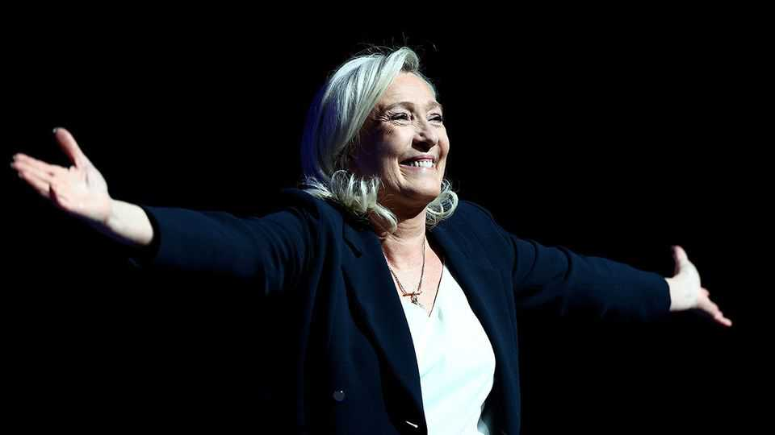
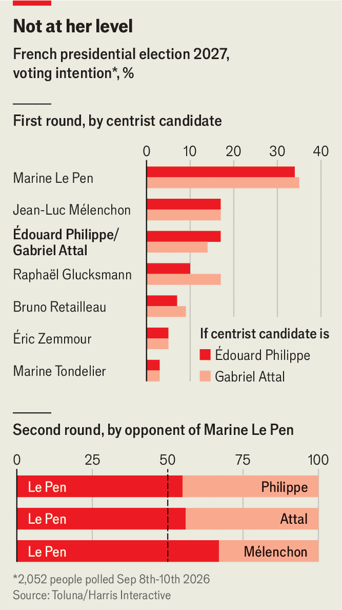

France’s centre has one question: who can beat Marine Le Pen?
Seven months out, presidential candidates are lacklustre and there are too many of them

Sep 17th 2026
One presidential hopeful donned an apron and served frites from a food truck. Another put on a harness and climbed to the top of a wind turbine. Yet another launched a “1,000 bistros” listening tour. Gimmicky showmanship means that presidential-election season is under way. At a two-round vote next April and May the French will elect a successor to Emmanuel Macron, who cannot stand for a third consecutive term. Polls consistently favour Marine Le Pen of the populist-right National Rally (RN), who launched her campaign on September 13th. With seven months to go, therefore, the presidential race has turned into a single question: who can beat Ms Le Pen?
The RN leader, on her fourth presidential bid, has a commanding lead. Five new polls give her 32-36% in the first round—at least 13 points ahead of her nearest rival, Edouard Philippe, one of Mr Macron’s former prime ministers. In each of three run-off scenarios Ms Le Pen wins. In one she beats Mr Philippe by 55% to 45%.

French polls this far ahead have often been wrong. Mr Macron was mentioned in only a few at this point before his election in 2017. Some past favourites (Edouard Balladur in 1994, Alain Juppé in 2016) subsequently crashed out. In over three years, Ms Le Pen has only once polled at below 30% in the first round. “The real difference between this election and previous ones is that it is possible this time for her to win,” says Clément Beaune, a former minister from Renaissance, Mr Macron’s party. “Her defeat or victory depends heavily on us.”
Yet the “us” in question is struggling. France’s broad centre reaches from the Socialists on the left to the Republicans on the right. There are at least 15 candidates in this space; some have already declared, others will take part in a Socialist Party primary in October. Still more have hinted at a bid. Such fragmentation makes it harder for any to qualify for the run-off, meaning the final choice may come down to two extremes: Ms Le Pen or Jean-Luc Mélenchon, the leader of the populist left.
The French centre’s troubles are hardly unique. Populist-right parties are surging in many democracies. Yet in Hungary, the Netherlands, Poland, Romania and elsewhere, centrists have found ways to beat them. Besides a willingness to sound firm on immigration and crime, politicians who vanquish populists tend to share three traits.
First, they have energy. Think of Peter Magyar, the centre-right liberal who defeated Hungary’s Viktor Orban in April. Or Rob Jetten, the centre-left liberal prime minister of the Netherlands. Both threw themselves into grassroots campaigning. Over two years Mr Magyar criss-crossed the country, at one point walking 300km and delivering up to seven speeches a day.

Second, they are often rebellious outsiders—or can credibly portray themselves as such. Mr Macron was an elite-trained former minister who cast his bid as an insurgency against the established parties. Mr Magyar, a longtime member of the governing party, fashioned himself as the rebel from the inside, lambasting his former party's corruption. Romania’s Nicusor Dan, who won the presidency last year, deftly distanced himself from the old parties despite being the mayor of Bucharest.
Third, successful centrists have a knack for memeable initiatives on issues voters care about. Mr Jetten’s proposal for ten new cities was a serious-but-not-literal commitment to do something about the country’s housing crisis. Mr Dan showed he would fight corruption by turning up to stop the bulldozers on dicey public-works projects. Centrists who balk at simple slogans and slick reels will have trouble connecting to voters, especially the young.
How do France’s aspirants match up? The bad news for the centre is that the two candidates who best share these traits are Ms Le Pen and Mr Mélenchon. At a recent presidential debate, this pair had the punchiest lines. The 75-year-old Mr Mélenchon, on his fourth attempt, knows how to coin a phrase; “burn it” is his suggestion for solving France’s sovereign-debt problem. Ms Le Pen, who is running after a court in July shortened a ban for embezzlement that could have kept her out of the race, lacks the freshness and TikTok savvy of Jordan Bardella, her lieutenant. But she is an anti-system candidate whose ideas, such as banning the Muslim hijab in public, have the merit of clarity, if little else.
No centrist aspirant, by contrast, can pretend to an insurgency. Three served under Mr Macron: Mr Philippe; Gabriel Attal, another ex-prime minister; and Bruno Retailleau, an ex-interior minister and the Republicans’ nominee. The closest is Raphaël Glucksmann, who is standing at the Socialist primary, and shunned Mr Macron. But he trails in fourth place in polls.
Mr Philippe was re-elected in March as mayor of Le Havre, which at least gives him a regional flavour. He is also the most experienced; his team argues that gravitas still counts. He is a centre-right fiscal conservative who does not hide the fact that the French will have to work more to fix the public finances. But it is hard to link Mr Philippe to a memorable phrase or idea. At his first rally in Paris in July, after speaking on stage for over an hour, he was only just getting to civil-service efficiency gains from AI.
The 37-year-old Mr Attal does have flair, and a knack for one-liners. He also looks to be enjoying the fight. “He wants to push, and see how far he can go,” says someone who knows him well. But neither he nor Mr Retailleau has yet managed a poll breakthrough. Each has also declined Mr Philippe’s appeal to rally behind him.
What would it take to agree on a single candidate? “It’s too late for a primary,” says a supporter of Mr Philippe. Polls and endorsements may put pressure on the weaker contenders, but that could take months. And even a deal among the trio might not be enough; the Socialists will rally behind their own nominee, and some on the right will defect to Ms Le Pen. Worries about fragmentation prompt some to hope for a grand outsider who could take the situation in hand. None of those hoping to play that role—from Dominique de Villepin on the right to François Hollande on the left—is convincing. Christine Lagarde, the European Central Bank president, says it’s “not on the agenda”. And time is running out.
The underlying trouble is that the centre has no momentum and feels tired. An unpublished focus-group study on French centre and centre-left voters for the Progressive Policy Institute, a think-tank, by Claire Ainsley and Deborah Mattinson, British political strategists, finds a deep erosion of confidence in the centre’s ability to make any difference. “Voters feel that the centre is empty, but don’t know where to turn,” says Ms Ainsley. The populists have a spring in their step and clarity of purpose; the centre lacks freshness, punch and unity. “If we spend the next few months shooting each other,” says one centrist figure, “then we are headed for disaster.” ■